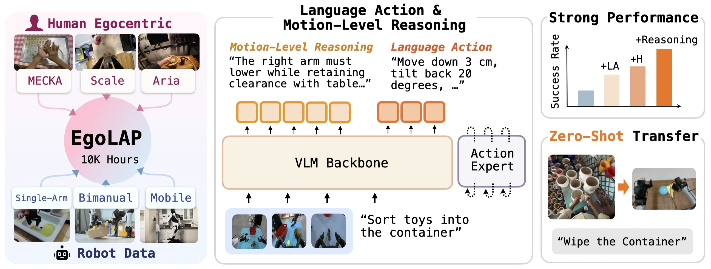
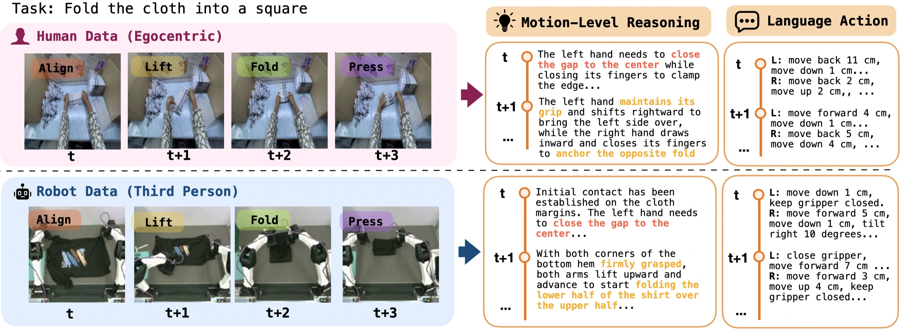
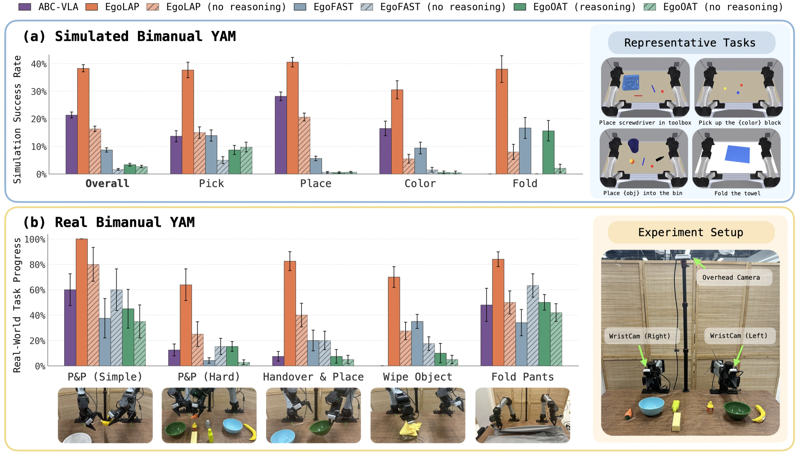
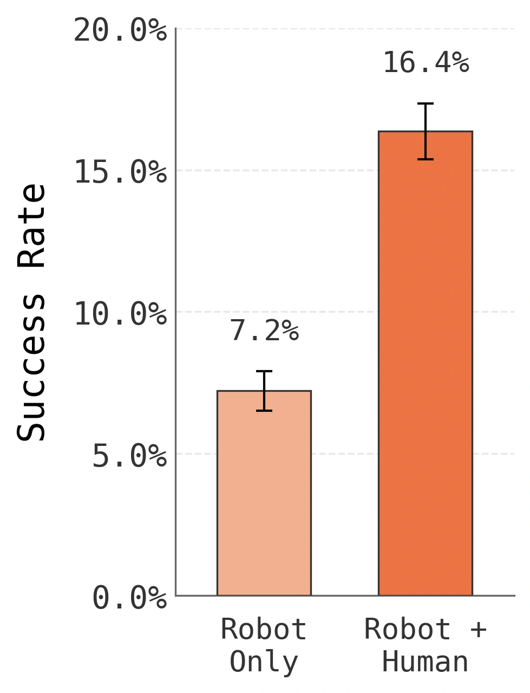
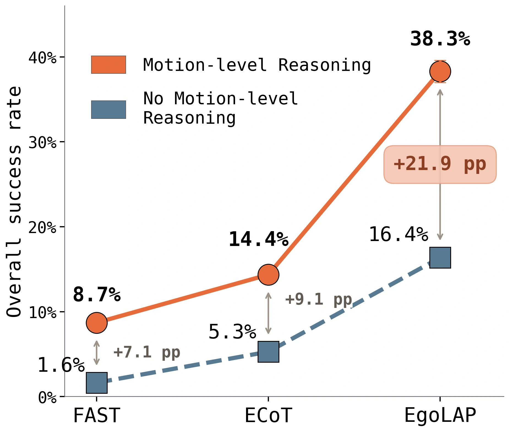
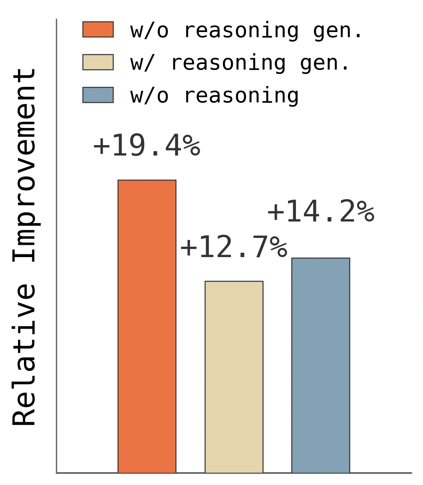

Align the motion
Express human hands and robot end-effectors in an egocentric frame over a one-second window.
1 Princeton University 2 Toyota Research Institute 3 Physical Intelligence
Human experience → Robot control
EgoLAP learns from egocentric human and robot trajectories by expressing motion intent in language. Structured language actions describe what to do; motion-level reasoning explains why the motion fits the scene.

Mean real-world task progress
Gain over alternative action representations
Zero-shot simulation success
Low-level actions depend on the embodiment. Their underlying intent can transfer. EgoLAP converts hand and end-effector trajectories into the same structured language, then co-trains a vision-language backbone on human and robot data.

Express human hands and robot end-effectors in an egocentric frame over a one-second window.
Pair structured language actions with reasoning about visible spatial relations and the intended physical effect.
A flow-matching action expert produces control commands directly. No text generation is needed at inference.
We evaluate on a customized bimanual YAM robot with unseen arm placement and camera configuration, and on 14 simulated tasks. No model is trained on simulation data. EgoLAP reaches 80.1% mean task progress in the real world and 38.3% success in simulation.


With the language-action representation held fixed and no reasoning supervision, adding egocentric human data raises simulation success from 7.2% to 16.4%—a 2.3× gain.
The simulator is unseen during training, making this a direct test of transfer across both embodiment and visual domain.
Motion-level reasoning focuses on why a local motion is physically appropriate. It connects visible geometry and contact to the next action, complementing language actions with a shared explanation of intent.
Real-world task progress improves from 44.5% without reasoning to 80.1% with motion-level reasoning.
Motion-level reasoning raises simulation success from 16.4% to 38.3%. A composite format that combines subtask, object-box, and visual-trace reasoning reaches 5.3% on its own, and 14.4% when combined with motion-level reasoning.
The strongest transfer comes from pairing physically grounded motion rationales with a language-based action interface.

| Retrieval metric | Without reasoning | EgoLAP | Gain |
|---|---|---|---|
| Robot → Human · 3-skill R@1 | 51% | 76% | +25 pts |
| Human → Robot · 3-skill R@1 | 42% | 63% | +21 pts |
| Robot → Human · 2-skill R@1 | 69% | 92% | +23 pts |
Reasoning improves the alignment of skill structure across human and robot representations. R@1 measures whether the nearest retrieved frame has the same skill.

Structured language actions are machine-parseable and can be scored against demonstrated motion. GRPO post-training improves simulation performance while keeping the vision encoder and continuous action expert frozen.
Sampling language actions without generating reasoning gives the stronger improvement in this experiment. Deployment continues to use continuous actions without decoding text.
EgoLAP improves success on all four evaluated unseen task instances compared with FAST.
| Task | Seen | Unseen | ||
|---|---|---|---|---|
| FAST | EgoLAP | FAST | EgoLAP | |
| Handover Mic | 70 | 58 | 26 | 44 |
| Handover Block | 22 | 40 | 13 | 34 |
| Shake Bottle | 80 | 96 | 80 | 97 |
| Turn Switch | 34 | 64 | 26 | 31 |
@misc{zha2026egolap,
title={EgoLAP: Learning from Egocentric Human Data through Language-Action Reasoning},
author={Lihan Zha and Shresth Grover and Tenny Yin and Samuel M. Bateman and Hengkai Pan and Mengchao Zhang and Aykut Onol and Allen Z. Ren and Dhruv Shah and Anirudha Majumdar},
year={2026},
note={Preprint}
}